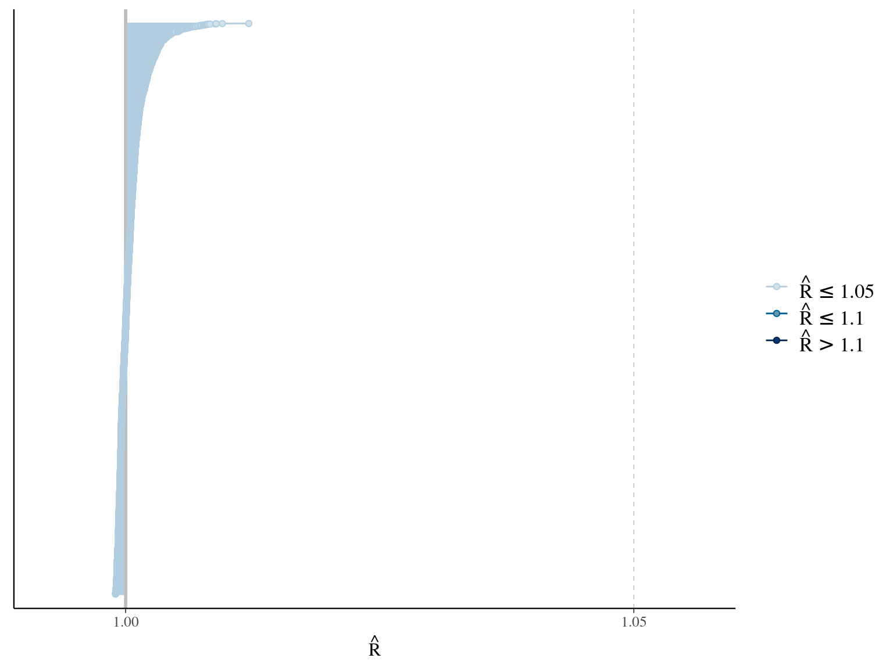
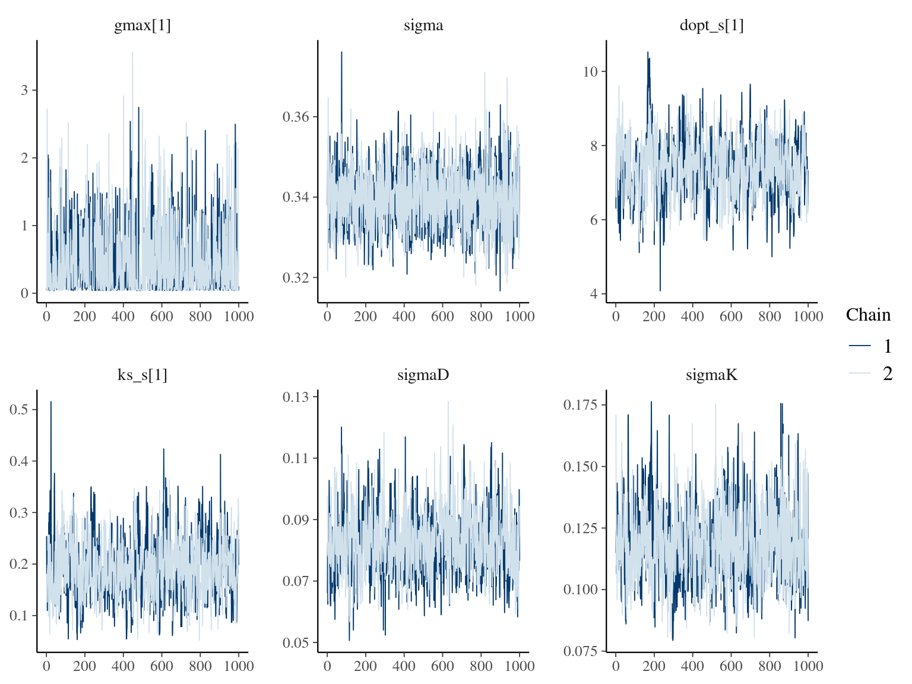
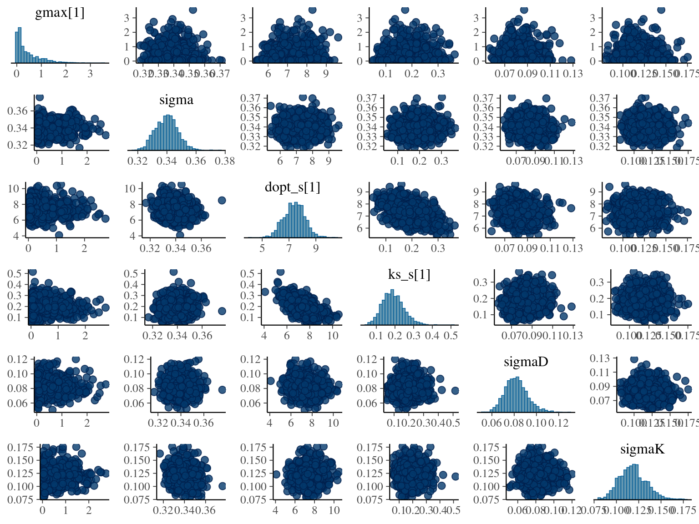
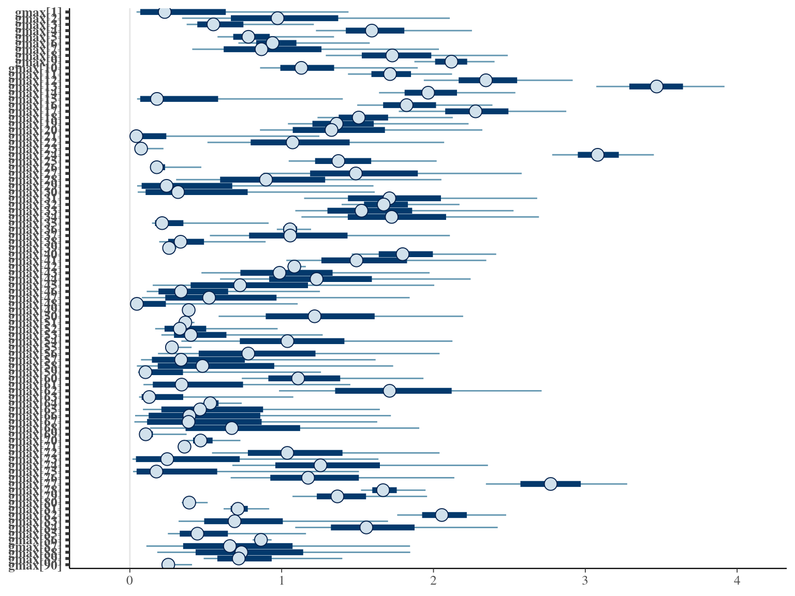

Chapter 2 Species integration
In this chapter, I looked for the best model to integrate species information based on quality of fit, cross-validation (LOO), and prediction (RMSEP). The result is summarised in Table 2.1.
2.1 Data
I used reduced data to explore the model form. I focused on trees at 20 meters from any plot edges for neighbourhood effect. I used only recruited trees in the censuses with at least 10 measurements of diameter at breast height (DBH, cm). I used only species with at least 10 trees following previous requirements. And, I randomly selected 10 trees among 9 species for lightweight training data. I further selected a random diameter measure for each individual as an evaluation data not used for model fitting (Fig. 2.1).

Figure 2.1: Tree diameter trajectories in training data. Color represent individuals and the red point the data used for evaluation.
2.2 Individual fixed
We used the selected model, i.e. Gompertz model (Herault2011?), with all parameters as individual fixed effects:
\[ DBH_{t,i} \sim \mathcal N (10 + gmax_i \times \sum _{y=1|DBH_{t=0}} ^{y=t} exp(-\frac12.[\frac{log(\frac{DBH_{t,i}}{100.Dopt_i})}{Ks_i}]^2)), \sigma)\]
The model correctly converged (\(\hat R < 1.05\)) with an acceptable but marked correlation between \(dopt\) and \(ks\). \(gmax\) posteriors have logical uncertainty but are varying widely among individuals. Finally predictions of the diameter trajectories by the model are good and realistic. Nevertheless, some posteriors seems to show bimodality.


2.3 Individual random
We used the selected model, i.e. Gompertz model (Herault2011?), with \(gmax\) as individual fixed effects and \(Dopt\) and \(Ks\) as individual random effects centered on species fixed effects:
\[ DBH_{t,i,s} \sim \mathcal N (10 + gmax_i \times \sum _{y=1|DBH_{t=0}} ^{y=t} exp(-\frac12.[\frac{log(\frac{DBH_{t,i}}{100.Dopt_i})}{Ks_i}]^2)), \sigma) \\| Dopt_i \sim \mathcal N(Dopt_s,\sigma_D), Ks_i \sim \mathcal N(Ks_s,\sigma_K) \]
The model correctly converged (\(\hat R < 1.05\)) with an acceptable but marked correlation between \(dopt\) and \(ks\). \(gmax\) posteriors have logical uncertainty but are varying widely among individuals. Finally predictions of the diameter trajectories by the model are good and realistic.


2.4 Species fixed
We used the selected model, i.e. Gompertz model (Herault2011?), with \(gmax\) as individual fixed effects and \(Dopt\) and \(Ks\) as species fixed effects:
\[ DBH_{t,i,s} \sim \mathcal N (10 + gmax_i \times \sum _{y=1|DBH_{t=0}} ^{y=t} exp(-\frac12.[\frac{log(\frac{DBH_{t,i}}{100.Dopt_s})}{Ks_s}]^2)), \sigma)\]
The model correctly converged (\(\hat R < 1.05\)) with an acceptable but marked correlation between \(dopt\) and \(ks\). \(gmax\) posteriors have logical uncertainty but are varying widely among individuals. Finally predictions of the diameter trajectories by the model are good and realistic.


2.5 Species random
We used the selected model, i.e. Gompertz model (Herault2011?), with \(gmax\) as individual fixed effects and \(Dopt\) and \(Ks\) as species random effects centered on community fixed effects:
\[ DBH_{t,i,s} \sim \mathcal N (10 + gmax_i \times \sum _{y=1|DBH_{t=0}} ^{y=t} exp(-\frac12.[\frac{log(\frac{DBH_{t,i}}{100.Dopt_s})}{Ks_s}]^2)), \sigma) \\| Dopt_i \sim \mathcal N(Dopt,\sigma_K), Ks \sim \mathcal N(Ks,\sigma_D) \]
The model correctly converged (\(\hat R < 1.05\)) with an acceptable but marked correlation between \(dopt\) and \(ks\). \(gmax\) posteriors have logical uncertainty but are varying widely among individuals. Finally predictions of the diameter trajectories by the model are good and realistic.


2.6 Dmax
We used the selected model, i.e. Gompertz model (Herault2011?), with \(gmax\) as individual fixed effects and \(Dopt\) and \(Ks\) as individual random effects centered on species fixed effects:
\[ DBH_{t,i,s} \sim \mathcal N (10 + gmax_i \times \sum _{y=1|DBH_{t=0}} ^{y=t} exp(-\frac12.[\frac{log(\frac{DBH_{t,i}}{100.Dopt_i})}{Ks_i}]^2)), \sigma) \\| Dopt_i \sim \mathcal N(Dopt_s,\sigma_D), Ks_i \sim \mathcal N(Ks_s,\sigma_K) \]
But we constrained \(dopt\) fitting \(d=\frac{dopt}{DBH_{95}}\) with \(d\in[0,1]\). The model correctly converged (\(\hat R < 1.05\)) with an acceptable but marked correlation between \(dopt\) and \(ks\). \(gmax\) posteriors have logical uncertainty but are varying widely among individuals. Finally predictions of the diameter trajectories by the model are good and realistic.





2.7 Comparisons
The individual random model has the best prediction (lowest RMSEP) associated to the best evaluation (second lowest loo epld), and a decent computing time. Moreover, model using species level \(Dopt\) and \(Ks\) are underestimating \(Gmax\) absolute value while overestimating individual variation in \(Gmax\) (last figures). Moreover, constraining \(dopt\) fitting \(d=\frac{dopt}{DBH_{95}}\) with \(d\in[0,1]\) resolved maximum treedepth issues and have similar performances. This is the best model that I’ll use in next steps.
| Model | RMSEP | LOO ELDP | Elapsed time |
|---|---|---|---|
| Individual fixed | 0.5194675 | -519.5235 | 1098.084 |
| Individual random | 0.5065365 | -511.3851 | 467.245 |
| Species fixed | 0.7176675 | -1131.3198 | 297.436 |
| Species random | 0.6995610 | -1113.3024 | 405.419 |
| Dmax | 0.5031310 | -511.7936 | 495.079 |

| elpd_diff | se_diff | elpd_loo | se_elpd_loo | p_loo | se_p_loo | looic | se_looic | |
|---|---|---|---|---|---|---|---|---|
| Individual random | 0.0000000 | 0.000000 | -511.3851 | 66.12526 | 141.06429 | 19.340438 | 1022.770 | 132.25052 |
| Dmax | -0.4085308 | 5.008777 | -511.7936 | 67.24839 | 148.77584 | 20.302966 | 1023.587 | 134.49677 |
| Individual fixed | -8.1383963 | 8.967316 | -519.5235 | 63.32304 | 144.10479 | 17.511319 | 1039.047 | 126.64607 |
| Species random | -601.9172862 | 50.741055 | -1113.3024 | 38.22549 | 91.71500 | 8.904312 | 2226.605 | 76.45097 |
| Species fixed | -619.9346413 | 51.696773 | -1131.3198 | 37.95275 | 89.35234 | 8.624910 | 2262.640 | 75.90549 |